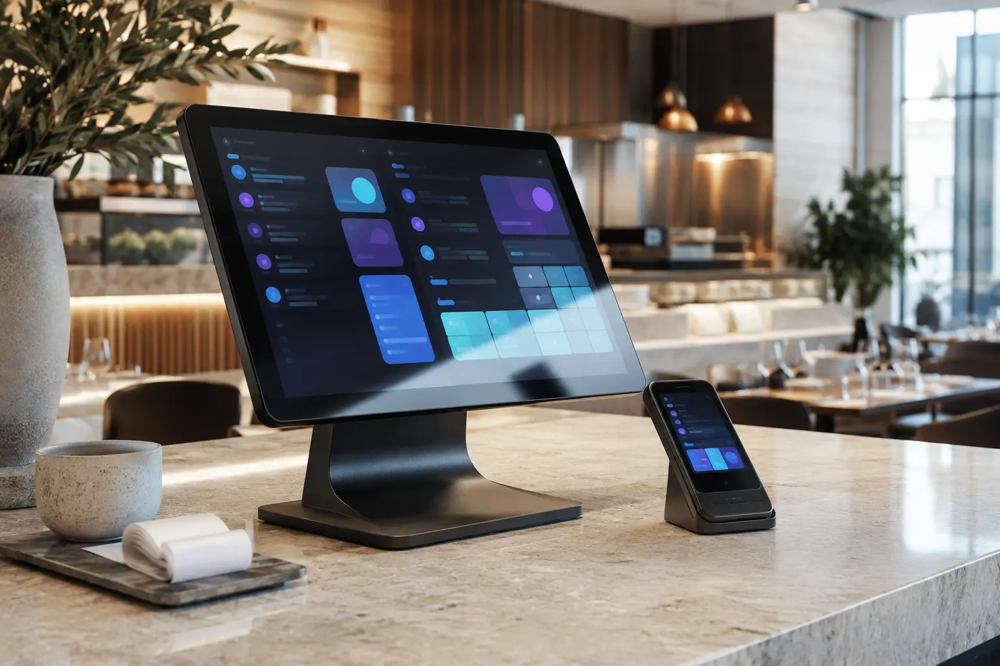

Point of sale
A fast, focused workspace for the rhythm of real service.
Service, in one clear flow.
A connected point-of-sale ecosystem that brings orders, tables, payments and daily operations into one responsive workspace.

The idea
From counter to table
Hospitality software often divides one service into separate screens and rigid steps. SDKPOS creates a shared operational picture for the counter, kitchen and floor.
Orders can begin on one device and continue on another. Staff see what needs attention, managers understand the live service and customers spend less time waiting.
A fast, focused workspace for the rhythm of real service.
Tables and orders remain connected wherever staff are working.
One current view of orders, readiness, tables and performance.
A clear path from the first item to the final receipt.
The experience
#084Table 12In preparation
#083TakeawayReady
#082Table 04Served
SDKPOS is being shaped inside real hospitality workflows. The system focuses on speed, legibility and dependable connections between the devices people already use.